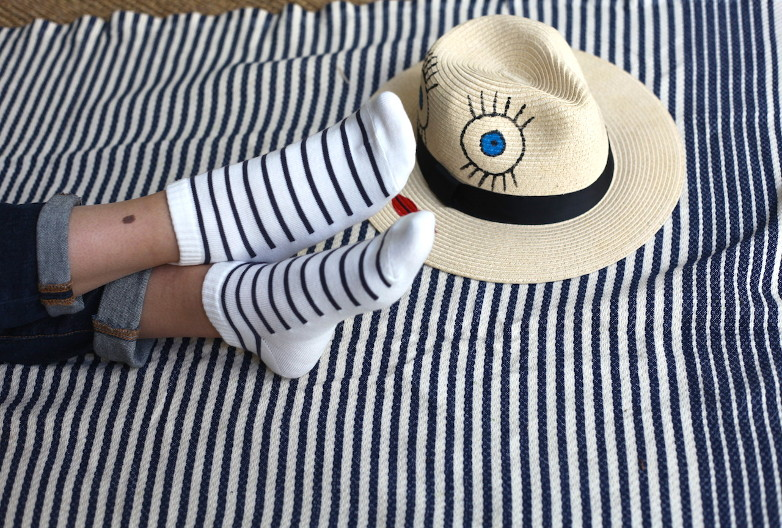
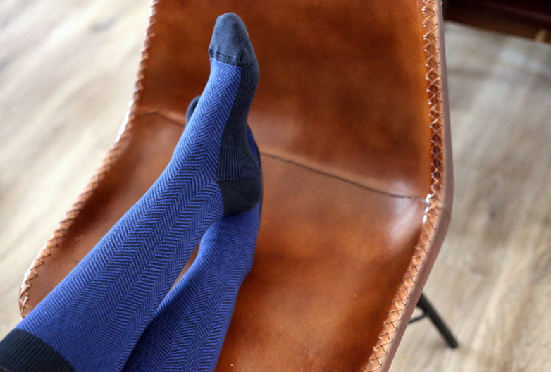
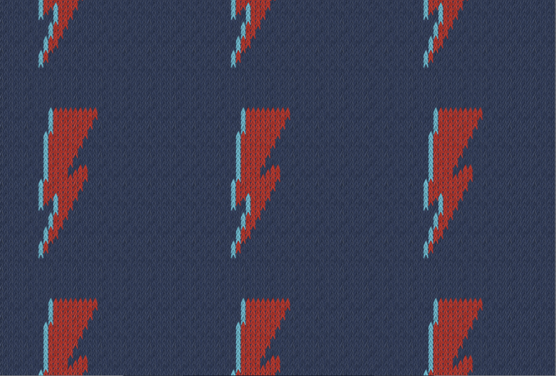

De Ville
De Ville
 De luxe
De luxe
 Bouclette
Bouclette
 Fantaisie
Fantaisie
 Socquette
Socquette
 Collant
Collant
NEW IN - des petites nouvelles d'Archidu-
chesse
Par Camille, il y a 2 semaines - 8 commentaires
Bonjour à tous,
Déjà des mois que je travaille dans l’ombre chez Archiduchesse, que j’apprends à vous connaitre, que je réponds en cachette à vos questions, que j’essaie d’adapter l’offre Archiduchesse à vos demandes et que je participe même parfois à l’envoi de quelques-uns de vos colis !
Il est enfin temps de me présenter plus officiellement.
Je suis Camille, la nouvelle gérante de la marque, j’ai rejoint les équipes en tant que conseillère depuis plusieurs mois, et je commence à prendre de plus en plus les rênes de cette magnifique aventure.
Vous l’avez peut-être remarqué mais depuis plusieurs semaines (voir plusieurs mois), il y a du mouvement chez Archiduchesse: on essaie d’animer un peu plus nos réseaux sociaux, on élargit nos gammes pour vous proposer des produits encore plus « funs », on vous envoie des newsletters (pas trop j’espère?) pour vous tenir au courant des dernières nouveautés, … et on continue de travailler sur pleins d’autres projets pour vous !
Mon objectif c’est de donner un nouveau souffle à la marque, tout en étant à votre écoute et en vous proposant des produits toujours plus adaptés à vos demandes ! Je souhaite garder cet esprit « de famille » proche de la communauté, continuer à être le plus transparent possible, vous offrir des produits de qualité adaptés à vos envies et rester engagée pour le Made in France.
Comme vous l’avez compris, il y a beaucoup de chantiers en cours pour cette année 2017, qui j’espère vous apportera toujours autant de satisfaction dans nos produits !
A très vite,
Camille
PS : avec toutes ces actualités, on a un peu mis de côté les bilans mensuels mais promis ils vont bientôt revenir (plutôt trimestriel je pense…), je vais m’y mettre :
Et pour me découvrir un peu plus :
Moi quand j’ai décidé de travaillé chez Archiduchesse :
Ma danse de la motivation pour vous offrir des produits de qualité :
et moi tout simplement :)

Nouveauté: les socquettesfantaisies!
Par Sanaa, il y a 1 mois - 5 commentairesNotre modèle Bénodet, marinière façon Archiduchesse, fait enfin son entrée dans notre gamme de socquettes! Toujours disponibles en 36/41 et 42/46, nous vous présentons les chaussettes de votre printemps!
Nouveauté: La chevronnée Bleue!
Par Sanaa, il y a 1 mois - aucun commentaireNotre modèle Bénodet, marinière façon Archiduchesse, fait enfin son entrée dans notre gamme de socquettes! Toujours disponibles en 36/41 et 42/46, nous vous présentons les chaussettes de votre printemps!
Les résultats de la sélection #9
Par Sanaa, li y a 1 mois - aucun commentaireMerci à tous pour vos votes! « Bowie Forever » se place donc en tête laissant « Flying V » et « Rock’n roll » en deuxième et troisième position. Bravo à Riot Grrrrl qui gagne ces élections et retrouvez bientôt le motif « Bowie forever » sur une future édition limitée! Merci à Nicouze et Aurélie pour votre participation, à bientôt pour une prochaine sélection!
